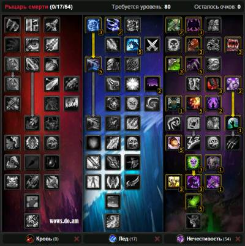
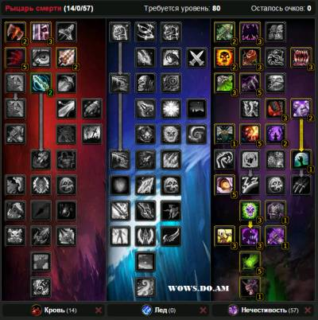
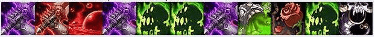

В этом билде вы не бурстить, но будете наносить большой урон постоянно.

Билд 2.
Используем этот билд пока не соберем 5.5 к гс.

2. Характеристики
1.Меткость — кап меткости для анхоли состовляет 8%
2.Сила — чем больше тем лучше, а также является основной характеристикой для анхоли
3.Скорость — также важная характеристика, набираем не меньше 150, но больше 300 собирать не стоит
4.Рейтинг крита — стараемся набрать не меньше 30%
3. Способности
Ледяной удар — Рыцарь смерти мгновенно атакует врага, нанося ему 55% урона от оружия и дополнительно 137.5 ед. урона от магии льда
Кровавый удар — Мгновенная атака, наносящая противнику 40% урона от оружия и дополнительно ед. урона. Урон возрастает на 12.5.1% за каждую болезнь, которой поражена цель
Удар чумы — Жестокий удар, наносящий цели % урона от оружия, ед. урона дополнительно и заражающий цель Кровавой чумой – болезнью, наносящей периодический урон от темной магии
Лик смерти — Выпускает заряд нечестивой энергии, наносящий 443 ед. урона от темной магии противнику или восстанавливающий нежити-союзнику 664.5 ед. здоровья
Удар плети — Нечестивый удар, наносящий 70% урона от оружия в виде физического урона и дополнительно 560 ед. урона. Кроме того, за каждую болезнь, которой вы заразили цель, вы наносите дополнительно 12% от нанесенного физического урона в виде урона от темной магии
Вскипание крови — Кровь всех противников в радиусе 10 м вскипает, нанося им 180 — 221 ед. урона от темной магии. Цели, пораженные «Ознобом» или «Кровавой чумой», получают дополнительный урон
Смерть и разложение — Оскверняет выбранный участок земли, нанося 62 ед. урона от темной магии раз в секунду всем целям в зоне действия в течение 10 сек
Власть крови — Увеличивает урон на 15% и исцеляет рыцаря смерти на 4% от наносимого урона.
4. Ротация
Бой ведем во Власти крови
Ротация по одной цели
Ротация по трешу

5. Символы
Большие:
Символ черной смерти — Увеличивает урон и эффективность исцеления вашего заклинания «Лик смерти» на 15%
Символ удара Плети — «Удар Плети» продлевает действие болезней на цели на 3 сек., максимум до 9 сек. дополнительно
Символ нечестивой порчи — Увеличивает урон от заклинания «Нечестивая порча» на 40%
Малые:
Символ зимнего горна — Увеличивает время действия эффекта «Зимний горн» на 1 мин.»
Символ мора — Увеличивает радиус воздействия способности «Мор» на 5 м.
Символ воскрешения мертвых — Заклинание «Воскрешение мертвых» не требует реагентов.
6. Чары
Голова — Магический знак страданий
Плечи — Великое начертание секиры
Грудь — Чары для нагрудника — все характеристики VII
Плащ — Чары для плаща — ловкость V
Наручи — Чары для наручей — штурм II
Перчатки — Чары для перчаток – крушитель, Свиток чар для перчаток — сила III или нехватке меткости Точность
Пояс — Извечная поясная пряжка
Ноги — Накладки для поножей из ледяной чешуи
Ботинки — Ледопроходец или Штурм II
7. Камни
Мета — Хаотический алмаз небесного сияния +21 к рейтингу критического удара и +3% к критическому урону или Алмаз жестокого землеправителя +21 к ловкости +3% криты
Красные — Рельефный багровый рубин +20 к силе
Желтые — Покрытый письменами аметрин +10 к силе и +10 к рейтингу критического удара, Мягкий царский янтарь +20 к скорости, Гибельный аметрин +20 к силе атаки и +10 к рейтингу критического удара
Синие — Царственный страхолит +10 к силе и +15 к выносливости Слеза кошмаров +10 ко всем характеристикам
Кузнечное — Даст вам несколько дополнительных дырок для камней
Портяжное дело — 400 апа.
10. Еда и Химия
Химия:
Настой бесконечной ярости — Увеличение силы атаки на 180 ед. на 3600 сек.
Зелье быстроты — Увеличивает рейтинг скорости на 500 на 15 сек.
Еда:
Пир на весь мир — увеличивает на 60 силу атаки
Филе дракоперой рыбы-ангела — увеличивает силу на 40
11. Макросы
Кровоотвод
/cast Кровоотвод
/cancelaura Кровоотвод
суть кровоотвода в том, что он дает руну крови, которую мы используем на ХС или мор, но бывают такие ситуации, когда спамя заранее ДС можете прожать руну смерти от кровоотвода с руной льда \ нечестивости, в зависимости что быстрее откатилось, тем самым испортив всю ротацию. Макрос сводит вероять эту на нет.
Рунический удар
#showtooltip
/cast [target=target,harm,combat]
!Рунический удар;Атака
Макрос на болезни
#Showtooltip
/castsequence reset=combat/target/6 Ледяное прикосновение, Удар чумы, Мор